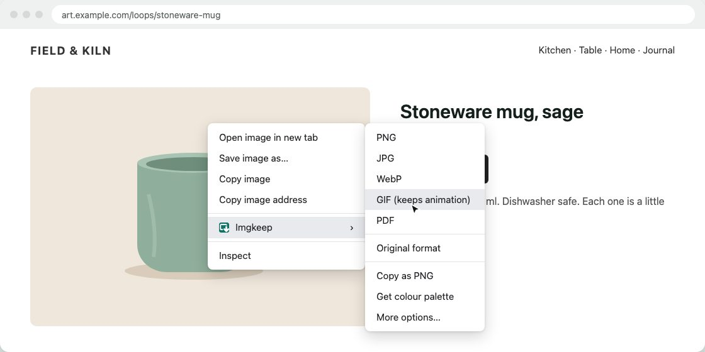

How to save an animated WebP as a GIF
Short answer
Right-click the animation, choose Imgkeep: Save image as, then GIF (keeps animation). Imgkeep rebuilds it frame by frame on your computer, keeping its timing and transparency. Without an extension, save the .webp file and export it as an animated GIF from GIMP, a free image editor. Don't pick JPG or PNG: they keep only one frame.
Updated
Why save an animated WebP as a GIF?
Many sites now send animations as WebP instead of GIF, because the files are smaller. Chrome saves exactly what the site sent, a .webp file, and plenty of apps, chats and upload forms either refuse it or show only the first frame. A GIF moves almost everywhere.
JPG and PNG hold one picture, not an animation. Converting an animated WebP to either one keeps a single frame.
What does GIF keep, and what does it lose?
- Kept: every frame, the timing between frames, and transparent areas.
- Colours: GIF has at most 256 colours per frame. Cartoons, stickers and screen recordings look fine; smooth gradients and photos can look grainy.
- Edges: GIF transparency is on or off, so soft, semi-transparent edges become hard edges.
- Size: the GIF is usually bigger than the WebP. GIF is a much older format and compresses far less well.
How do I save it as a GIF in one step?
An extension can turn the animation into a GIF as you save it, from the right-click menu. It runs in your browser, so pick one you can trust (how to check an image extension is safe). Here's how it works with ours.
Our extension
Imgkeep
- Add Imgkeep to Chrome from the Chrome Web Store.
- Right-click the animation and choose Imgkeep: Save image as.
- Pick GIF (keeps animation). Imgkeep rebuilds it frame by frame, with its timing and transparency.

It works for animated WebP, AVIF and APNG. A GIF is saved exactly as it is, and a still image becomes a one-frame GIF. To keep files manageable, animations wider than 800 pixels are scaled down to 800 wide, keeping their shape, and very long or very large ones (over 600 frames, for example) can't be converted; you can save the original format instead. Conversion happens on your computer; nothing is uploaded. Free and open source.
Add Imgkeep to Chrome — free Works in Chrome 116 and newer. Also for Microsoft Edge.How do I convert it without an extension?
Any computer: GIMP
GIMP is a free image editor for Windows, Mac and Linux, and it opens animated WebP.
- Save the animation as usual (right-click › Save image as…).
- Open the
.webpfile in GIMP. Each frame becomes a layer. - Choose File › Export As, give the file a name ending in
.gif, and click Export. - Tick As animation and click Export again.
Check the result: if frames pile up on top of each other, export again with the frame disposal set to One frame per layer (replace), and check the delay between frames in the same window.
Online converters
They work, but you upload the animation to someone else's server. Fine for public pictures; think twice for anything private.
What doesn't work
- Copy image copies one frame, not the animation.
- Renaming
.webpto.gifchanges the name, not the file. It's still WebP inside.
What if there's no image to save?
Many "GIFs" on social sites are really short videos. If right-clicking shows video options (like Loop or Save video as…) instead of image options, it isn't an image, and image tools, Imgkeep included, can't save it as a GIF. If the menu shows neither, the image may be covered by another layer: see when right-click won't save an image.
Related guides
- Why Chrome saves images as WebP
- How to save WebP as JPG or PNG
- How to save AVIF as JPG or PNG
- Chrome saves images as JFIF? How to get JPG
- How to save an image as a PDF in Chrome
- A safe alternative to Save image as Type
- When right-click won't save an image
Questions
Why does my saved animation only show one frame?
The app you opened it with doesn't play animated WebP, or the image was converted to JPG or PNG, which can't hold animation. Save it as a GIF instead.
Will the GIF look as good as the WebP?
Often close, but not always. GIF has at most 256 colours per frame, so smooth gradients and photos can look grainy or banded, and soft transparent edges become hard edges.
Why is the GIF bigger than the WebP?
GIF is a much older format and compresses far less well, so the same animation usually takes more space. That's the price of a file that plays everywhere. For still images, see how to save WebP as JPG or PNG.